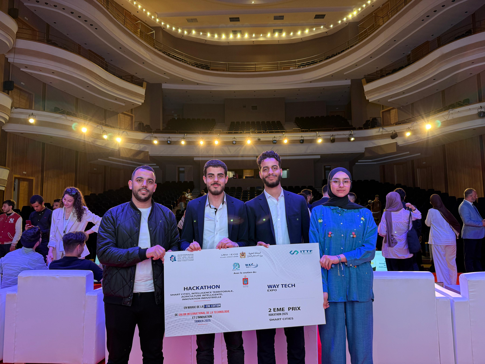
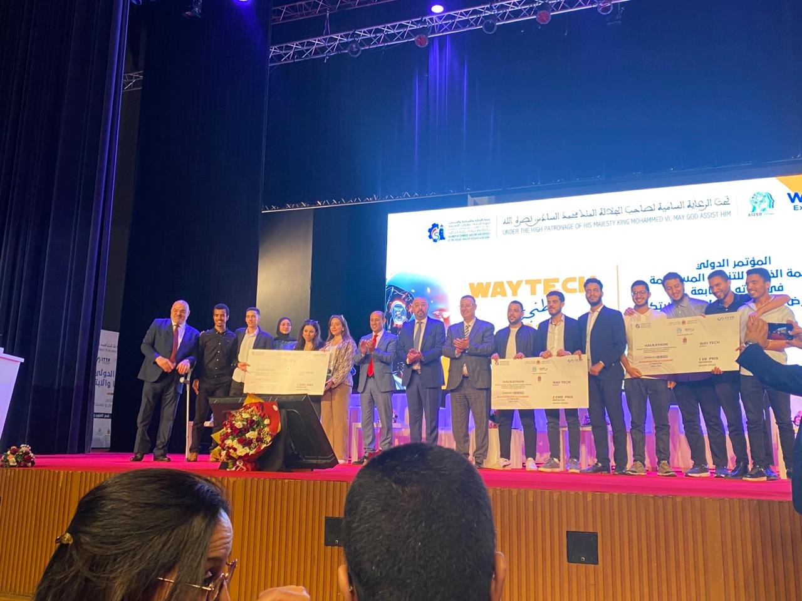

Tanger, sous le Haut Patronage de Sa Majesté le Roi Mohammed VI
Parmi plus de 300 projets soumis de tout le Royaume, 30 équipes ont été sélectionnées pour la grande finale du Hackathon AI2SD (Smart Cities & IA), organisé à Tanger sous le Haut Patronage de Sa Majesté le Roi Mohammed VI. Cette édition exceptionnelle a été marquée par la présence du Ministre de l'Industrie et du Commerce. Notre équipe a fièrement représenté l'ENSET Mohammedia et a remporté la 2e place, assortie d'un prix de 20 000 MAD, face à une forte concurrence nationale. Cette distinction valorise à la fois l'innovation, le travail d'équipe et l'engagement académique de notre établissement.

